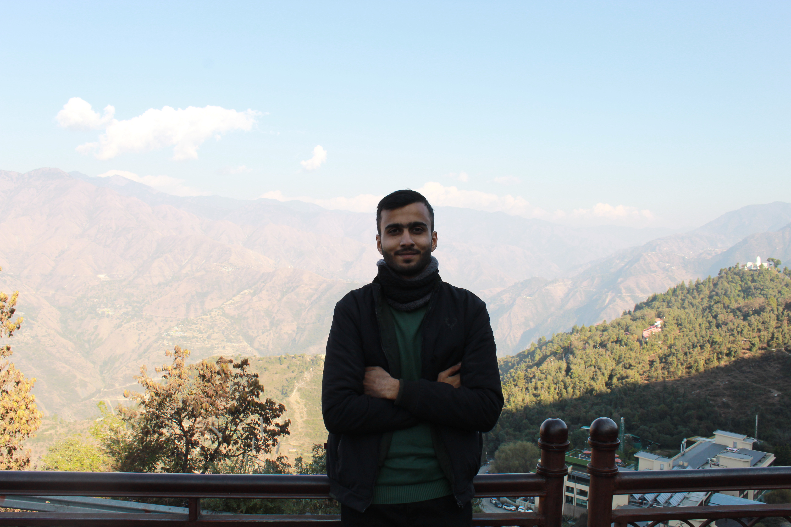

Adarsh Prakash Singh
About Me
Hey there, everyone! I'm Adarsh Prakash Singh, but you can just call me Adarsh. I'm a Computer Science student at ABES Engineering College. My passion? Becoming a skilled Data Scientist! Let's dive into the world of coding together!
I am a 6'3" tall individual from Ballia, Uttar Pradesh, with a strong passion for discipline, leadership, and continuous learning. Having cleared the NDA written exam twice and earning a recommendation from 12 SSB Bangalore, I carry a deep-rooted commitment to excellence. During my school days, I served as the School Cadet Adjutant and Captain of the football team, reflecting my leadership and team-building skills.
Currently, I am in my second year of college, exploring the dynamic field of software, data science, and analysis. I hold a 5-star rating in Python on HackerRank and am actively involved in various campus organizations.
I serve as Vice Captain of my college football team, a member of the outreach department in SALAAH, and contribute to the promotions team of Trishul. My creative side finds expression in the literature society Minerva. My journey has been defined by my adaptability, passion for learning, and motivation to inspire others. I thrive in collaborative environments, consistently striving to push boundaries and turn challenges into opportunities for growth.